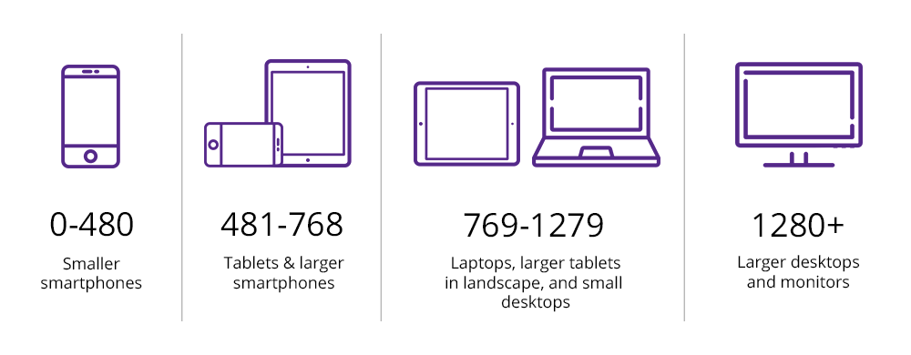

Адаптивность
Viewport
Вьюпорт браузера отличается (может отличаться) от физ. размера разрешения дисплея устройства, так как на дисплее может присутствовать ретина (2-x или 3-x слойная), которая как бы разбивает пиксели вьюпорта и повышается качество воспринимаемого контента (pixel is not a pixel on viewport).
Медиа-запросы
@media screen and (min-width: 480px) and (max-width: 800px) {
.selector {...}
}
/* При печати */
@media print {
.selector {...}
}
/* Разрешение и ретина (используется редко) */
@media (min-resolution: 144dpi), (min-resolution: 1.5dppx) {
.selector {...}
}
Распростанненые брейкпоинты
yesviz.com - Список viewport устройств webmobilefirst - Спецификация viewport устройств
TV / Cinema
- 10240px - 10К
- 7680px - 8К
- 5120px - 5К
- 3840px - 4К
Desktop
- 2560px - 2К-мониттор / TV
- 1920px - FullHD-монитор
Laptop
- 1728px - Macbook Pro 16"
- 1512px - Macbook Pro 14"
- 1440px - Macbook Pro 15"
- 1280px - Macbook Air 13"
Tablet (481px — 768px)
- 1280px - Galaxy Tab (landscape)
- 800px - Galaxy Tab (portrait)
- 1024px, 1080px, 1180px, 1194px, 1366px - iPads (landscape)
- 768px, 810px, 820px, 834px - iPads (portrait)
- 568px - 926px - mobile (landscape)
Mobile (360px — 480px)
- 428px - iPhone 12/13/14 Pro Max
- 414px - iPhone 11 + 6/7/8 Plus
- 393px - Xiaomi, Redmi Note
- 390px - iPhone 12/13/14 + Pro
- 375px - iPhone 6/7/8, Samsung S6, S7, S8, S9, Honor, Huawei, HTC, Sony
- 360px - iPhone 12 Mini/13 Mini
- 320px - iPhone 5/SE1 (можно забыть)
Ширины контейнеров (Desktop First)
Ноутбуки, мониторы [1920 - 1280px]
- 1170px (padding слева-справа 15-20px)
- 1106px - ВК (c padding 0 15px)
- 960px (padding слева-справа 15-20px)
Планшеты, перевернутые телефоны [1279 - 768px]
- ширина контейнера 720px (padding слева-справа 15-20px)
Телефоны [767 - 360px]
- ширина контейнера 100% (padding слева-справа 15-20px)
- добавлять мин. ширину 360px (если вьюпорт будет меньше 360px, то добавлять overflow-x: scroll;)
Пример скачкообразного изменения ширины контейнера:
// desktop first (max - 1280px)
.container {
width: 1170px;
padding: 0 20px;
margin: 0 auto;
}
// tablet (1279px - 768px)
@media screen and (max-width: 1279px) {
.container { width: 720px; }
}
// mobile (767px - min)
@media screen and (max-width: 767px) {
.container {
width: 100%;
min-width: 360px;
overflow-x: scroll;
padding: 0 15px;
// Можно добавлять макс. ширину, чтобы сильно не растягивалось
max-width: 480px;
}
}
Mobile first
Эта концепция в веб вроде как применяется редко в РФ (у нас особо не заморачиваются, просто делают адаптивные сайты). Обычно всегда Desktop first.
- Усложнять простое проще, чем упрощать сложное
- Добовлять новое лучше, чем изменять старое
- Под mobile лучше делать резиновую вёрстку, так как ширина у мобильных устройств может отличаться
Bootstrap breakpoints
Max-width
// X-Small devices (portrait phones, less than 576px)
@media (max-width: 575.98px) { ... }
// Small devices (landscape phones, less than 768px)
@media (max-width: 767.98px) { ... }
// Medium devices (tablets, less than 992px)
@media (max-width: 991.98px) { ... }
// Large devices (desktops, less than 1200px)
@media (max-width: 1199.98px) { ... }
// X-Large devices (large desktops, less than 1400px)
@media (max-width: 1399.98px) { ... }
// XX-Large devices (larger desktops)
// No media query since the xxl breakpoint has no upper bound on its width
Min-width
// X-Small devices (portrait phones, less than 576px)
// No media query for `xs` since this is the default in Bootstrap
// Small devices (landscape phones, 576px and up)
@media (min-width: 576px) { ... }
// Medium devices (tablets, 768px and up)
@media (min-width: 768px) { ... }
// Large devices (desktops, 992px and up)
@media (min-width: 992px) { ... }
// X-Large devices (large desktops, 1200px and up)
@media (min-width: 1200px) { ... }
// XX-Large devices (larger desktops, 1400px and up)
@media (min-width: 1400px) { ... }
Подключение адаптивных стилей
<link href="css/desktop.css" rel="stylesheet" media="(min-width:768px)">
<link href="css/tablet.css" rel="stylesheet" media="(min-width:481px) and (max-width:767px)">
<link href="css/mobile.css" rel="stylesheet" media="(max-width:480px)">
@import url(css/base.css); /* без медиазапроса, для всех */
@import url(css/medium.css) (min-width:481px) and (max-width:768px);
@import url(css/small.css) (max-width: 480px);
<!-- базовый мета-тег для viewport -->
<meta name="viewport" content="width=device-width, initial-scale=1">
<!-- запрет на зум -->
<meta name="viewport" content="minimum-scale=1, maximum-scale=1, user-scalable=0">
Пример Desktop-first на scss
// variables
// DESKTOP [1201 - 1920] --> 1920 дизайн-макет
$laptop: 1200px; // LAPTOP [1024 - 1200] --> 1024 дизайн-макет
$tablet: 1023px; // TABLET [768 - 1023] --> 768 дизайн-макет
$mobile: 767px; // MOBILE [0 - 767] --> 414 дизайн-макет
// mixins
@mixin laptop {
@media screen and (max-width: $laptop) {
@content;
}
}
@mixin tablet {
@media screen and (max-width: $tablet) {
@content;
}
}
@mixin mobile {
@media screen and (max-width: $mobile) {
@content;
}
}
// применение
.some-selector {
// desktop and common styles
color: white;
// laptop & tablet & mobile styles (<=1200px)
@include laptop {
color: red;
}
// tablet & mobile styles (<=1023px)
@include tablet {
color: green;
}
// only mobile styles (<=767px)
@include mobile {
color: blue;
}
}